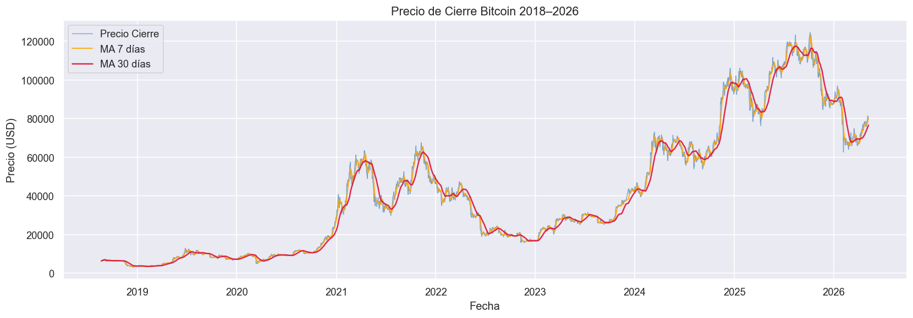
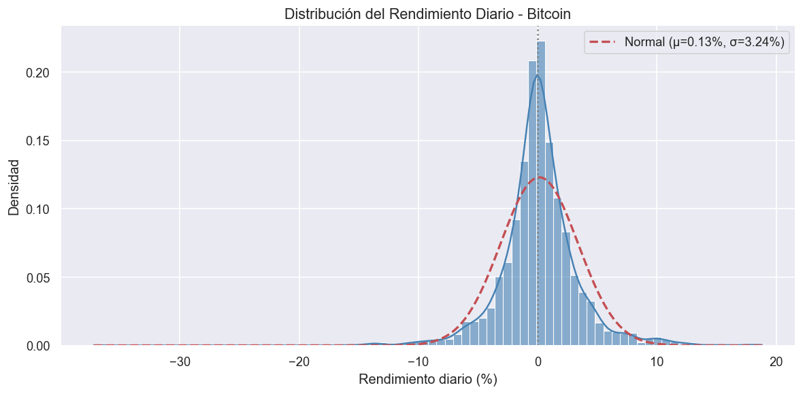
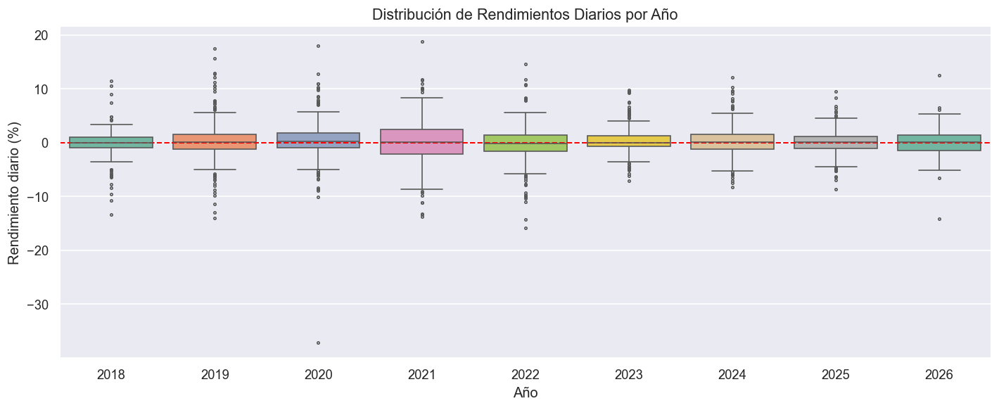
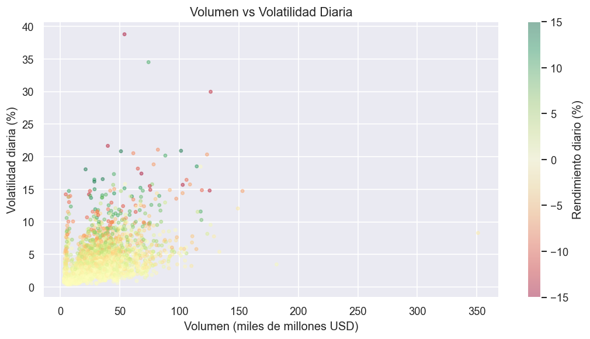
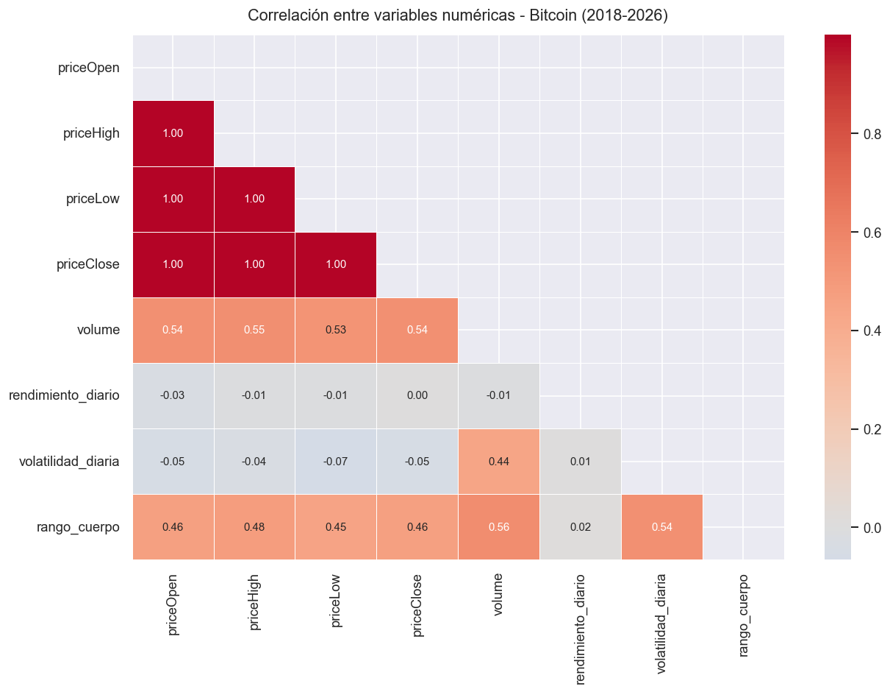

Minería de Datos · Proyecto Final · Universidad
Bitcoin Analytics
Dashboard 2018–2026
Análisis completo de 2,794 registros diarios de Bitcoin desde agosto 2018 hasta mayo 2026 — precio, rendimiento, volatilidad, volumen y señales de trading.
Sección 1
Sobre el Dataset y Preprocesamiento
Descripción completa de la fuente de datos, columnas disponibles y las transformaciones aplicadas para preparar el dataset de análisis.
📦 Descripción del Dataset
Dataset de precios históricos diarios de Bitcoin (BTC/USD) descargado de fuente histórica de precios cripto. Cubre el período comprendido entre el 22 de agosto de 2018 y el 8 de mayo de 2026, con un total de 2,794 registros diarios y 21 columnas tras el feature engineering.
⚙️ Preprocesamiento Aplicado
Extracción de temporalidad
Desde la columna fecha se extrajeron: año, trimestre, mes, nombre_mes, dia, dia_semana, nombre_dia y semana_año.
Rendimiento diario
Calculado como variación porcentual del priceClose respecto al día anterior: (Close_t / Close_{t-1} - 1) × 100
Volatilidad diaria
Rango porcentual High-Low respecto al Open: (High - Low) / Open × 100
Rango de cuerpo y dirección
Rango_cuerpo = |Close - Open|. Dirección: binario 1=alcista si Close > Open, 0=bajista.
Medias móviles
MA7 y MA30 calculadas como media simple de los últimos 7 y 30 días del priceClose.
Validación y limpieza inicial
Se verificó ausencia de duplicados (0 encontrados en 2,794 registros). Se corrigió la codificación UTF-8 con BOM (utf-8-sig) que afectaba columnas con caracteres especiales (año, semana_año). Se detectó y conservó el único valor nulo en rendimiento_vs_anterior (fila 1, sin día previo). Se aplicó detección de outliers con IQR sobre rendimiento_diario: rango válido ≈ [−11.8%, +13.4%]; valores extremos documentados sin eliminación (fat tails de Bitcoin).
Estadísticas descriptivas calculadas
Para cada variable numérica se computaron: media (μ), desviación estándar (σ), mediana, moda, coeficiente de asimetría (skewness) y curtosis (kurtosis). Hallazgo clave: rendimiento_diario presenta asimetría ≈ −0.18 (ligera cola izquierda) y curtosis ≈ 10.4 (distribución leptocúrtica — colas mucho más gordas que la normal), lo que confirma el riesgo de eventos extremos en Bitcoin.
Matriz de correlación (Pearson)
Se calculó la correlación de Pearson entre todas las variables numéricas. Correlaciones destacadas: priceClose ↔ media_movil_7d = 0.999; priceClose ↔ media_movil_30d = 0.997; volatilidad_diaria ↔ rango_cuerpo = 0.81; rendimiento_diario ↔ direccion = 0.73. Correlación rendimiento ↔ precio prácticamente nula (−0.02), confirmando independencia entre nivel de precio y retorno diario.
Clasificación de variables
Las 21 columnas se clasificaron según la taxonomía del curso: Numérica Continua (precios OHLC, volumen, rendimiento, volatilidad, medias móviles — 9 vars), Numérica Discreta (año, mes, día, trimestre, semana_año — 5 vars), Categórica (nombre_mes, nombre_dia — 2 vars), Binaria (dirección alcista/bajista — 1 var), Fecha/Tiempo (fecha — 1 var), Feature ingeniería (rango_cuerpo, rendimiento_vs_anterior — 2 vars derivadas).
Manejo del único valor nulo
La columna rendimiento_vs_anterior presenta exactamente 1 valor nulo en el primer registro (2018-08-22) porque no existe día anterior de referencia. Decisión: se conserva como NaN sin imputar, ya que imputar con 0 o con la media distorsionaría la distribución de retornos. En análisis estadísticos se excluye automáticamente mediante dropna(); Power BI lo trata como BLANK() en DAX sin afectar agregaciones.
| Columna | Tipo dato | Tipo según curso | Descripción |
|---|---|---|---|
| fecha | DateTime | Numérica Discreta | Fecha del registro diario |
| año | Int | Numérica Discreta | Año extraído de la fecha |
| trimestre | Int | Numérica Discreta | Trimestre (1–4) |
| mes | Int | Numérica Discreta | Mes numérico (1–12) |
| nombre_mes | String | Categórica | Nombre del mes en inglés |
| dia | Int | Numérica Discreta | Día del mes (1–31) |
| dia_semana | Int | Numérica Discreta | Día de la semana (0=lunes) |
| nombre_dia | String | Categórica | Nombre del día en inglés |
| semana_año | Int | Numérica Discreta | Semana del año (1–53) |
| priceOpen | Float | Numérica Continua | Precio de apertura diario (USD) |
| priceHigh | Float | Numérica Continua | Precio máximo del día (USD) |
| priceLow | Float | Numérica Continua | Precio mínimo del día (USD) |
| priceClose | Float | Numérica Continua | Precio de cierre diario (USD) |
| volume | Float | Numérica Continua | Volumen operado en USD |
| rendimiento_diario | Feature | Numérica Continua | Variación % del priceClose respecto al día anterior |
| volatilidad_diaria | Feature | Numérica Continua | Rango % High-Low respecto al Open |
| rango_cuerpo | Feature | Numérica Continua | Diferencia absoluta |Close - Open| |
| direccion | Binario | Categórica | 1 = alcista (Close > Open), 0 = bajista |
| media_movil_7d | Feature | Numérica Continua | Media móvil simple 7 días del priceClose |
| media_movil_30d | Feature | Numérica Continua | Media móvil simple 30 días del priceClose |
| rendimiento_vs_anterior | Feature | Numérica Continua | Rendimiento del día vs día anterior (1 nulo en día 1) |
Python — Preprocesamiento
Pipeline aplicado sobre bitcoin_raw.csv con pandas, scipy y statistics.
1 · Carga y validación inicial
Lectura del CSV con codificación utf-8-sig para manejar el BOM del archivo. Verificación de shape (2,794 × 21), conteo de nulos (1 en rendimiento_vs_anterior), duplicados (0) y tipos de dato de cada columna.
2 · Ingeniería de características temporales
Conversión de fecha a datetime y extracción de 8 variables: año, trimestre, mes, nombre_mes, dia, dia_semana, nombre_dia y semana_año usando los atributos .dt de pandas.
3 · Indicadores técnicos
Cálculo de rendimiento_diario (pct_change × 100), volatilidad_diaria ((High−Low)/Open × 100), rango_cuerpo (|Close−Open|), direccion binaria y medias móviles MA7 y MA30 con rolling().mean().
4 · Estadísticas descriptivas clave
Cálculo de media (+0.13%), mediana, desviación estándar (3.24%), skewness (≈ −0.18) y kurtosis (≈ 10.4) con statistics y scipy.stats. Matriz de correlación de Pearson con DataFrame.corr().
Sección 1.5 · Fundamentos Teóricos
Marco Teórico: Minería de Datos
Curso: Minería de Datos — Gustavo Santos Vargas · Universidad Libre
Metodología CRISP-DM Aplicada
Preprocesamiento Aplicado
Se aplicaron: eliminación de duplicados (0 encontrados), validación de formatos, manejo del único nulo en rendimiento_vs_anterior e ingeniería de características generando 12 variables derivadas a partir de fecha y precio.
Análisis Estadístico Descriptivo
Se calcularon media (+0.13%), σ = 3.24%, asimetría negativa (mínimo −37.19%) y curtosis positiva (distribución leptocúrtica — fat tails). Se aplicó detección de outliers vía IQR; 2020–2021 presentan mayor dispersión y 2022 la mayor concentración de extremos negativos.
Minería de Series de Tiempo
Serie de tiempo con cuatro componentes: Tendencia (de $3,236 a $124,752), Ciclos bull/bear ~2 años ligados a halvings, Estacionalidad mensual/semanal e Irregulares (COVID 2020, Terra/Luna 2022, FTX 2022). Las MA7 y MA30 actúan como suavizamiento y generación de señales.
Diagrama de Dispersión y Correlación
Correlación de Pearson entre variables numéricas: volumen ↔ volatilidad (r = 0.44) y precio ↔ volumen (r = 0.54) muestran relaciones positivas moderadas. El scatter volumen vs volatilidad confirma la relación con outliers en eventos extremos.
Sección 2 · Power BI
Análisis de Rendimientos
Comportamiento diario de los retornos de Bitcoin agregados por año y mes.
Análisis del comportamiento diario de los retornos de Bitcoin agregados por año y mes. Se identifican años con rendimiento negativo 2018 y 2022 asociados a ciclos bajistas del mercado cripto. El 51.11% de los días son alcistas, indicando un leve sesgo positivo estructural. El rendimiento máximo diario registrado fue +18.80% y el mínimo -37.19%, evidenciando la alta asimetría de la distribución. Los meses de febrero, marzo y octubre históricamente concentran los mejores rendimientos promedio, mientras junio y agosto tienden a ser negativos.
Sección 3 · Power BI
Señales de Compra / Venta / Neutro
Sistema de señales basado en cruces de medias móviles MA7 y MA30.
Análisis de medias móviles MA7 y MA30 como sistema de señales de trading. Cuando la MA7 cruza hacia arriba la MA30 se genera un Golden Cross (señal COMPRA); el cruce inverso genera un Death Cross (señal VENTA). Al cierre del dataset la señal es COMPRA con MA7 = $79,939 superior a MA30 = $76,662. El análisis por día de semana revela que miércoles y lunes concentran mayor rendimiento promedio, mientras jueves registra el peor rendimiento promedio. Viernes y lunes lideran en volumen operado.
Sección 4 · Power BI
Precio y Volatilidad
Evolución histórica del precio de cierre y análisis de la volatilidad diaria por períodos.
Evolución del precio de cierre desde $3,236 en 2018 hasta máximo histórico de $124,752. Se observan claramente los ciclos bull/bear: rally 2020–2021, corrección 2022 (−70% desde máximos) asociada al colapso de Terra/Luna y la quiebra de FTX, recuperación 2023–2024 impulsada por la aprobación de ETFs de Bitcoin spot, y nuevo ATH en 2025. La volatilidad promedio diaria es 4.13% con picos de hasta 38.78% en eventos extremos como el crash de marzo 2020 (COVID). El rango de cuerpo de las velas muestra mayor indecisión del mercado en períodos de alta volatilidad.
Sección 5 · Power BI
Volumen y Acumulación
Análisis del volumen operado a lo largo del tiempo y su relación con el precio.
El volumen total operado en la serie asciende a $91.51 billones USD. Se observa una correlación moderada precio-volumen de 0.54, indicando que los movimientos de precio fuertes tienden a coincidir con mayor actividad pero sin una dependencia directa. El volumen promedio diario creció de aproximadamente $4B en 2018 a $35B en 2026, reflejando la creciente adopción institucional y la maduración del mercado cripto. Los meses de febrero y marzo históricamente concentran mayor volumen promedio, coincidiendo con los períodos de mayor actividad alcista.
Sección 6 · Python — pandas · matplotlib · seaborn
Análisis Estadístico
Gráficas generadas con Python para análisis exploratorio profundo de distribuciones, correlaciones y patrones temporales.

6.1 — Precio de Cierre con Medias Móviles (MA7 y MA30)
Serie temporal completa del precio de cierre de Bitcoin con MA7 y MA30 superpuestas. Se visualizan los Golden Cross y Death Cross a lo largo de 8 años de historia. Los cruces de medias en 2019, 2020 y 2023 precedieron movimientos alcistas sostenidos de semanas o meses. La MA30 actúa como soporte dinámico durante las tendencias alcistas y como resistencia en tendencias bajistas, siendo un indicador de tendencia de medio plazo más fiable que la MA7.

6.2 — Distribución del Rendimiento Diario
Histograma con curva KDE comparada contra distribución normal teórica (μ = 0.13%, σ = 3.24%). La distribución es leptocúrtica: exceso de curtosis positivo y colas más pesadas que la normal. La cola izquierda alcanza −37% (crash COVID, marzo 2020) mientras la derecha llega a +18.8%. Este comportamiento de fat tails es característico de activos cripto e implica que los modelos de riesgo gaussianos (VaR normal) subestiman significativamente la probabilidad de pérdidas extremas.

6.3 — Distribución de Rendimientos por Año (Boxplot)
Distribución de rendimientos diarios desglosada por año. 2020 y 2021 muestran mayor dispersión (cajas más amplias) y abundantes outliers positivos, reflejo del bull market post-halving. 2022 presenta la mayor cantidad de outliers negativos extremos, coincidiendo con el colapso de Terra/Luna (mayo) y la quiebra de FTX (noviembre). Desde 2023 la dispersión se reduce progresivamente, sugiriendo mayor madurez y menor volatilidad estructural del activo conforme aumenta la adopción institucional.

6.4 — Scatter: Volumen vs Volatilidad Diaria
Scatter plot con volumen operado en el eje X y volatilidad diaria en el eje Y, coloreado por dirección del día (verde = alcista, rojo = bajista). La mayoría de los registros se concentran en la zona de baja volatilidad y volumen moderado (clúster inferior izquierdo). Los outliers de alta volatilidad (>20%) aparecen distribuidos en todo el rango de volumen, indicando que los movimientos extremos no dependen exclusivamente de la liquidez disponible. La correlación volumen-volatilidad es 0.44, relación moderada positiva.

6.5 — Heatmap de Correlaciones (Pearson)
Matriz de correlación de Pearson entre todas las variables numéricas del dataset. Hallazgos principales:
- priceOpen / High / Low / Close ≈ 1.0 — esperado, son precios del mismo activo en el mismo día.
- volume ↔ precio: 0.54 — correlación moderada positiva; el volumen crece con el precio a largo plazo.
- rendimiento_diario ↔ precio: −0.03 a 0.00 — confirma que los retornos son aproximadamente estacionarios.
- rango_cuerpo ↔ volume: 0.56 — días de mayor movimiento de precio coinciden con mayor actividad de mercado.
Sección 7
Conclusiones
Hallazgos principales derivados del análisis exploratorio del histórico de Bitcoin 2018–2026.
-
—
Sesgo alcista leve con riesgo asimétrico Bitcoin presenta un sesgo positivo del 51.11% de días alcistas, pero la distribución de retornos es leptocúrtica con cola izquierda hasta −37%, lo que implica que las caídas extremas son más severas que los rallies equivalentes. Los modelos de riesgo gaussianos subestiman el riesgo real.
-
—
Ciclos bull/bear de aproximadamente 2 años Se identifican claramente los ciclos 2018 (bajista), 2019–2021 (alcista), 2022 (bajista severo −70%), 2023–2025 (alcista con nuevo ATH). Los halvings de Bitcoin actúan como catalizadores de los ciclos alcistas con un retraso aproximado de 6–12 meses.
-
—
La señal MA7 vs MA30 es efectiva como indicador de tendencia Los Golden Cross y Death Cross anticiparon correctamente los grandes movimientos de tendencia en 2019, 2020 y 2023. La señal actual es COMPRA con MA7 ($79,939) superior a MA30 ($76,662). Es más confiable como confirmador que como predictor de entrada precisa.
-
—
Estacionalidad mensual y semanal clara Febrero, marzo y octubre son históricamente los meses más rentables. Junio y agosto tienden a ser negativos. A nivel semanal, miércoles y lunes concentran mayor rendimiento promedio. El volumen se reduce significativamente los fines de semana, aumentando la volatilidad sin liquidez de soporte.
-
—
La volatilidad estructural disminuye con el tiempo La volatilidad promedio cayó del >6% en 2018–2019 a ~3% en 2025–2026. Esto refleja la creciente adopción institucional (ETFs spot aprobados en 2024), mayor profundidad de mercado y maduración del activo como clase de inversión.
-
—
Correlación moderada precio-volumen (0.54) El mercado no es puramente especulativo: existe relación real entre actividad de mercado y precio a largo plazo. Sin embargo, los movimientos extremos de precio no siempre están acompañados de alto volumen, especialmente en eventos de liquidaciones masivas o fines de semana.
Sección 8 · Minería de Datos Aplicada
Decisiones a Tomar
Basado en el análisis exploratorio, los patrones de minería de datos y las métricas calculadas sobre 2,794 registros diarios, se derivan las siguientes recomendaciones accionables para un inversor o analista que trabaje con Bitcoin.
Golden Cross activo: MA7 ($79,939) supera MA30 ($76,662) — patrón que en 2019, 2020 y 2023 precedió rallies sostenidos. Acción: entrada escalonada en correcciones hacia el soporte de MA30.
Distribución leptocúrtica con cola izquierda hasta −37%; en 2022 el activo cayó 70% desde máximos. Acción: limitar exposición al 5–10% del portafolio y establecer stop-loss en ruptura de MA30.
Febrero, marzo y octubre son los meses históricamente más rentables; junio y agosto tienden a ser negativos. Acción: ponderar entradas en enero-febrero y reducir exposición en mayo-junio.
Volatilidad promedio 4.13% diaria con picos de 38.78%; fines de semana concentran mayor volatilidad con menor liquidez. Acción: evitar órdenes grandes en fin de semana y usar límites de precio en todos los trades.
Retorno acumulado desde 2018 supera el 1,100% pese a ciclos bajistas — la estrategia DCA mensual históricamente supera al timing activo. Acción: para horizonte >2 años, compra fija mensual y doblar en correcciones >15%.
Los 3 indicadores clave: (1) Cruce MA7/MA30, (2) volumen relativo (caídas con alto volumen son más peligrosas), (3) volatilidad diaria >10% en día bajista = alerta de corrección mayor. Acción: revisar semanalmente.